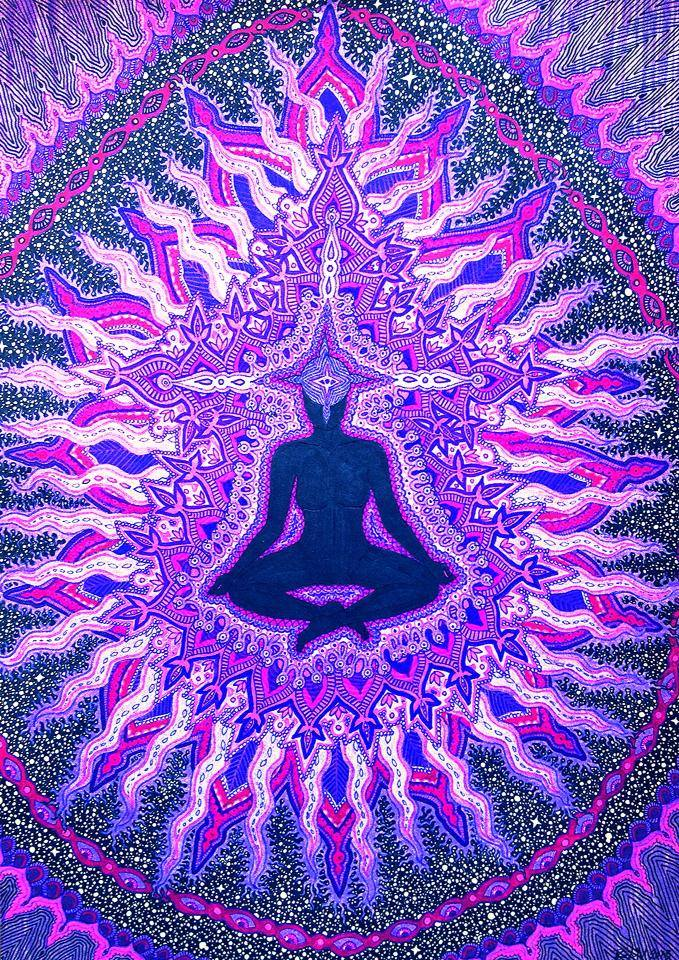

Ajna = command, knowledge
The Ajna Chakra is situated in the middle of the forehead, between the eyebrows. For this reason it
is also known as the “third eye”. The Ajna Chakra is the centre of clarity and wisdom. It forms the
boundary between human and Divine consciousness. It is the meeting point of the three principle
Nadis, Ida (Moon Nadi), Pingala (Sun Nadi) and Sushumna (Central Nadi). When the energy of these
three Nadis unites here and rises further, we attain Samadhi, Supreme Consciousness.
Its Mantra is OM. The colour of Ajna is white. Its element is the element of the mind, Anupada
Tattva. Its symbol is a white Shiva Lingam, representative of creative consciousness. In this and
all subsequent Chakras, there are no animal symbols. At this level, only pure, human and Divine
qualities exist.
In the symbolic picture of the Ajna Chakra there is a Lotus with two petals, indicating that at this
level of consciousness there exists “only two”, Atma (Self ) and Paramatma(God). The Divinities of
Ajna Chakra are Shiva and Shakti united in one form. This means that in the Ajna Chakra
consciousness and Nature are already united, but have still not merged into total unity.
The qualities of this Chakra are unity (Ekata), emptiness (Shunya), truth (Sat), Consciousness
(Chitt) and bliss (Ananda). The “eye of knowledge” opens within and we see the reality of the Self -
hence the term “third eye”, which is an attribute of Lord Shiva. The Ajna Chakra is the seat of the
“inner Master”. It indicates that wisdom and knowledge are realised in all actions. The egocentric
intellect has surrendered to the higher, ethical, reasoning power of discrimination (Viveka).
However a blockage in this Chakra has the opposite effect, diminishing one’s power of contemplation
and discrimination, resulting in confusion.
Ajna Chakra - Eyebrow Centre
The Characteristics of Ajna Chakra
The color of Ajna Chakra
Ajna Chakra it is the sixth energy center of all the seven chakras. The balance of this chakra is freedom of thought and expression. The color that reflects its concept is Indigo. The almost dark blue hues or royal blue is associated with night. It also opens the door to the Divine. Indigo is the color of wisdom and inner knowledge. It brings clarity to all the five senses in the body. The color Indigo encourages the transformation of energies from the lower chakras into higher spiritual vibrations.
Third-Eye Chakra symbol
The Ajna symbol is an OM positioned over an inverted triangle that is seated within a circle between two lotus petals. This symbol contains two elements associated with wisdom: the upside-down triangle and the lotus flower. It strongly supports the concept of supreme intelligence and spiritual enlightenment. It channels the energy towards universal knowledge and is a gateway to higher consciousness.
Ajna Chakra Imbalance
The increasing desire for material things disconnects us from our true Self. There is impatience, expectations, burdens of the past, and many more negative thoughts that block our vision. This distance from spirituality blurs our intuition and imbalances Ajna Chakra. Other aspects that manifest are indecisiveness, confusion, lack of focus and purpose, or depression. The struggle to reach your goals becomes even more difficult with self-doubt and narrow mindedness.
An overactive Ajna is not that common since the physical reality is dominating in a modern lifestyle. However, in unique circumstances, an overactive Third-Eye Chakra results in overwhelming feelings. The psychic activities increase with instances of paranormal experiences. This can also lead to hallucinations and complete dissociation from the real world.
The physical symptoms of an imbalanced third eye chakra affect the neurons of the brain with problems like:
- Eye problems
- Headache
- Migraine
- Brain disorders
- Insomnia
- Endocrine imbalance
- Disorders in Pituitary and Pineal Gland, Hypothalamus
Positive affirmations for Crown Chakra balance
Affirmations are the best technique for balancing the chakras. All of them aim to boost confidence and faith in oneself without any judgments or Ego. These affirmations promote an open Third eye Chakra.
- I see all things in clarity.
- I am open to new ideas.
- I can manifest my vision.
- I trust and follow my intuition.
- I am connected to my true path and purpose.
- I am connected with the wisdom of the universe.
- I am open to new ideas.
- I am the source of my truth and my love
- I open myself to know my inner guidance and deepest wisdom
- I release and forgive the past
- I am guided by inner wisdom.
| Chakra Symbol |  |
|---|---|
| Chakra Name | Third Eye Chakra |
| Chakra Sanskrit Name | Ajna |
| Chakra Location | Forehead |
| Chakra Color | Indigo |
| Chakra Seed Sound | OM |
| Chakra Element | Light |
| Chakra Affirmation | I See |
| Chakra Gland | Pineal |